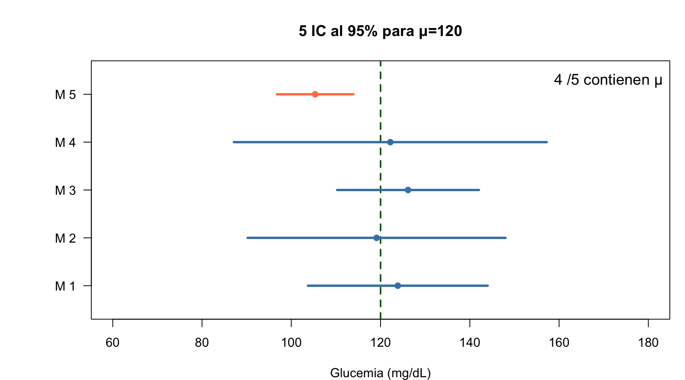
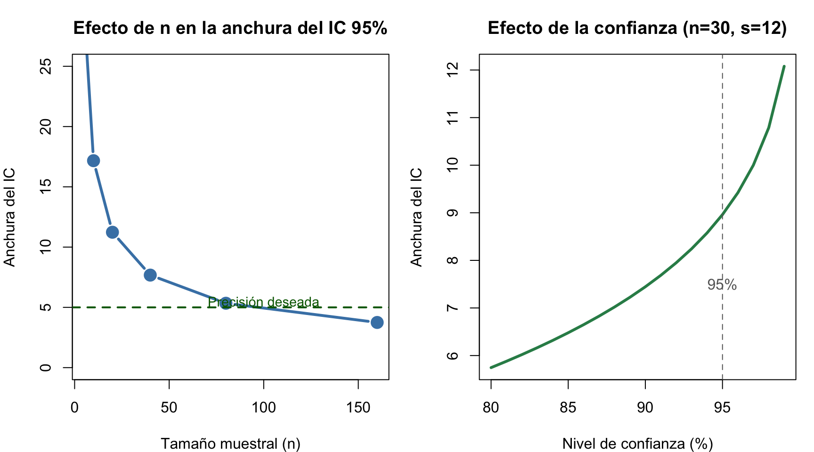
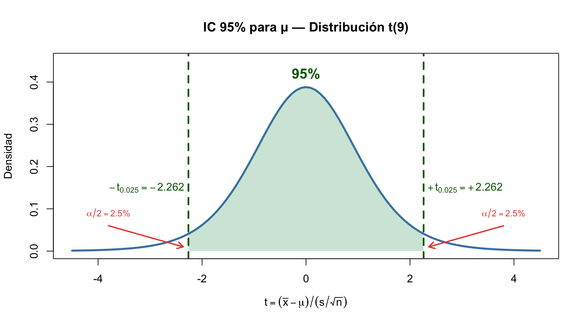
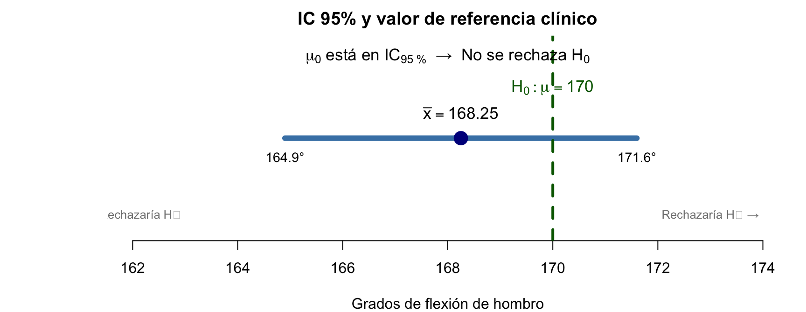

Dpto. Estadística e Investigación Operativa · Universidad de Granada
Objetivos de aprendizaje — Tema 3
Tip
Al finalizar este tema sabrás:
Distinguir entre población y muestra, parámetro y estimador
Entender qué es un estadístico muestral, su distribución y el TCL
Deducir matemáticamente el tamaño muestral a partir de la precisión deseada
Construir e interpretar intervalos de confianza para una media y una proporción
Calcular el tamaño muestral necesario para una precisión deseada
Conectar la estimación por IC con el contraste de hipotesis (test \(t\))
Recordemos: Población y muestra
Población (\(N \to \infty\)) - Conjunto completo de individuos/objetos que queremos estudiar - Es inaccesible en su totalidad - Se caracteriza mediante parámetros poblacionales: \(\mu\), \(\sigma\), \(p\)
Muestra (\(n\)) - Subconjunto accesible de la población - Debe ser representativa (selección aleatoria) - Proporciona estadísticos muestrales: \(\bar{x}\), \(s\), \(\hat{p}\)
Importante
Inferencia Estadística: conjunto de técnicas que permiten extender las conclusiones de la muestra a toda la población. Dos ramas: - Teoría de la Estimación → determinar el valor de los parámetros poblacionales - Teoría de Contrastes de Hipótesis → decidir entre hipótesis sobre los parámetros
El problema de la estimación puntual
Advertencia
Los estimadores puntuales solo dan una idea de cuánto puede valer el parámetro, pero no informan de cómo de buena es la aproximación. Reducen toda la información muestral a un solo valor.
Ejemplo — Peso medio de estudiantes UGR:
Dos muestras aleatorias de 20 estudiantes:
Muestra 1: \(\bar{x}_1 = 71\) kg
Muestra 2: \(\bar{x}_2 = 67\) kg
¿Coinciden?
¿Cuál es mejor?
¿Qué error cometemos al asumir una de ellas como \(\mu\)?
Solución → Estimación por intervalos
En lugar de un único valor, damos un conjunto de valores probables para el parámetro, con una probabilidad (confianza) asociada.
Estimación puntual
Nota
La estimación puntual asigna al parámetro poblacional un único valor aproximado que depende de la muestra.
Estimador → Estimación
Concepto
Definición
Ejemplo
Estimador
Función de las observaciones muestrales (regla/estadístico)
\(\hat{\mu} = \bar{X} = \frac{1}{n}\sum X_i\)
Estimación
Valor numérico concreto que toma el estimador en una muestra
\(\bar{x} = 169.4\) mg/dL
Tip
Notación: el acento circunflejo (ˆ) sobre el símbolo del parámetro indica su estimador: \(\hat{\mu}\) es el estimador puntual de \(\mu\).
Método analógico (el más habitual):
Parámetro poblacional
Estimador puntual
Media \(\mu\)
\(\hat{\mu} = \bar{x}\)
Desviación tipica \(\sigma\)
\(\hat{\sigma} = s\)
Proporción \(p\)
\(\hat{p} = x/n\)
Comprueba tu comprensión — Parámetro vs estimador
Tip
Pregunta rápida: Tu compañero dice: “La media de glucemia en mi muestra de 5 pacientes es 105 mg/dL, por lo tanto la media poblacional es 105.” ¿Qué le responderías? Señala al menos dos problemas con esta afirmación.
Estadístico muestral
Importante
Un estadístico muestral es cualquier función de las observaciones de la muestra:
Es una variable aleatoria — su valor cambia de muestra a muestra
Tiene una distribución — la distribución muestral del estadístico
La distribución muestral describe cómo varía el estadístico si repitiéramos el muestreo infinitas veces
Parámetro \(\neq\) Estadístico
Parámetro
Estadístico
Población
Muestra
Fijo (desconocido)
Variable aleatoria
\(\mu, \sigma, p\)
\(\bar{x}, s, \hat{p}\)
Distribución muestral de \(\bar{X}\):
\(E[\bar{X}] = \mu\) (insesgado)
\(Var(\bar{X}) = \frac{\sigma^2}{n}\)
Si \(X \sim N(\mu, \sigma^2) \Rightarrow \bar{X} \sim N(\mu, \frac{\sigma^2}{n})\)
¿De Dónde Sale la Corrección \(n-1\)?
Tip
Material complementario (opcional): Esta derivación matemática es para quien quiera profundizar. Si solo recuerdas una idea, quédate con esto: dividir por \(n-1\) en lugar de \(n\) corrige el sesgo porque la media muestral \(\bar{x}\) está más cerca de los datos que la media poblacional \(\mu\) — las distancias son sistemáticamente más pequeñas y necesitamos compensar inflando la estimación.
Nota
La pregunta: ¿Por qué dividimos por \(n-1\) al calcular la varianza muestral en lugar de por \(n\), que parecería lo natural?
La intuición en una frase:\(\bar{X}\) está más cerca de los datos que \(\mu\), así que las distancias a \(\bar{X}\) son sistemáticamente más pequeñas que las distancias a \(\mu\). Para compensar, inflamos la estimación dividiendo por un número menor (\(n-1\)).
Simulación — Veamos el sesgo con nuestros propios ojos
Experimento: Extraemos 10,000 muestras de una población Normal(\(\mu=150\), \(\sigma^2=400\)). Para cada muestra, calculamos \(S'^2\) (dividiendo por \(n\)) y \(S^2\) (dividiendo por \(n-1\)). Comparamos sus promedios con \(\sigma^2=400\).
Lo que vemos: Sin corrección (rojo), la media de 10,000 estimaciones es ~320, muy por debajo de \(\sigma^2=400\) → sesgo negativo del 20%. Con corrección (verde), la media es ~400 → insesgado. La corrección funciona.
Respiro clínico — La corrección n-1 en la práctica
Analogía clínica: Mides la flexión de rodilla en 5 pacientes. Sabes que la media es 130°. Si te digo el valor de 4 pacientes, el 5º queda determinado (no es libre). Solo \(5-1=4\) pacientes aportan información independiente sobre la variabilidad.
Tip
Para recordar: Con \(n=5\) pacientes (típico en estudios piloto de fisioterapia), dividir por \(n\) subestima la variabilidad en un 20%. Usa siempre \(n-1\).
La intuición algebraica: De la variabilidad total (\(n\sigma^2\)), \(\sigma^2\) se “gasta” en estimar \(\bar{X}\) (la incertidumbre sobre la media). Solo quedan \((n-1)\sigma^2\) para estimar la dispersión. Por eso dividimos por \(n-1\): es el número de piezas independientes de información sobre la variabilidad que quedan tras estimar la media.
Grados de libertad — La intuición
Los grados de libertad (\(gl = n-1\)) son exactamente eso: el número de piezas de información independiente que quedan tras usar los datos para estimar un parámetro.
Tip
Analogía clínica: Mides la flexión de rodilla en 5 pacientes. Sabes que la media es 130°. Si te digo el valor de 4 pacientes, el 5º queda determinado (no es libre). Solo \(5-1=4\) pacientes aportan información independiente sobre la variabilidad.
Conclusión clínica: Con \(n=5\) pacientes (típico en un estudio piloto), dividir por \(n\) subestima la variabilidad en un 20%. Esto produce IC demasiado estrechos y tests que encuentran significación donde no la hay. Con \(n \geq 60\), la corrección es casi irrelevante (\(<2\%\)). Pero en fisioterapia, donde los estudios pequeños son frecuentes, usar siempre \(n-1\) es fundamental.
n-1 — Para Recordar
Importante
Si solo recuerdas una cosa sobre \(n-1\): Dividir por \(n-1\) (en lugar de \(n\)) corrige un sesgo que subestima la variabilidad. Con muestras pequeñas (\(n<30\), típicas en fisioterapia), la corrección es crucial. Con muestras grandes (\(n>60\)), la diferencia es pequeña.
Tres formas de entenderlo: 1. Intuición:\(\bar{x}\) está más cerca de los datos que \(\mu\) → distancias más pequeñas → compensamos dividiendo por menos 2. Simulación: 10,000 muestras confirman que sin corrección subestimamos ~20% con \(n=5\) 3. Matemáticas: De la variabilidad total, una parte se gasta en estimar \(\bar{x}\) → quedan \(n-1\) piezas independientes (grados de libertad)
Teorema Central del Límite
Importante
Conexión T02→T03: La distribución Normal que estudiamos en el Tema 2 es el destino al que converge cualquier suma de variables independientes. El TCL es el puente matemático entre la probabilidad teórica y la inferencia práctica.
TCL — Visualización
Para reflexionar: Si mido la flexión de hombro en solo 5 pacientes, ¿la media de esos 5 seguirá una distribución Normal?
Con \(n=30\) ya se aprecia la campana. Con \(n=100\) es casi perfecta.App interactiva TCL
Teorema central del límite (TCL)
Sea \(X_1, X_2, \ldots, X_n\) una muestra aleatoria de cualquier distribución con media \(\mu\) y varianza \(\sigma^2\). Cuando \(n\) es suficientemente grande:
Paso 3 — El TCL afirma:\(Z_n \xrightarrow{d} N(0, 1)\) cuando \(n \to \infty\)
El papel de \(\sqrt{n}\): La variabilidad de la suma crece con \(\sqrt{n}\) (no con \(n\)). Por eso la media muestral se concentra alrededor de \(\mu\) al aumentar \(n\): \[Var(\bar{X}) = \frac{\sigma^2}{n} \quad \Rightarrow \quad DE(\bar{X}) = \frac{\sigma}{\sqrt{n}}\]
TCL — Ejemplo numérico paso a paso
Población: Tiempo de recuperación (días) tras tratamiento de fisioterapia. Distribución exponencial con media \(\mu = 10\) días (\(\sigma = 10\)).
Para \(n=5\) (muestra pequeña):\[E[\bar{X}] = 10 \quad DE(\bar{X}) = \frac{10}{\sqrt{5}} = 4.47\] La media muestral varía mucho — NO es normal aún.
Para \(n=100\) (muestra grande):\[E[\bar{X}] = 10 \quad DE(\bar{X}) = \frac{10}{\sqrt{100}} = 1.0\] La media muestral se concentra — ≈ normal (TCL).
Comparación numérica de la precisión según \(n\):
\(n\)
\(DE(\bar{X})\)
IC 95% aproximado para \(\bar{X}\)
Amplitud
5
\(10/\sqrt{5} = 4.47\)
\(10 \pm 1.96 \cdot 4.47\)
\(\pm 8.76\)
30
\(10/\sqrt{30} = 1.83\)
\(10 \pm 1.96 \cdot 1.83\)
\(\pm 3.58\)
100
\(10/\sqrt{100} = 1.00\)
\(10 \pm 1.96 \cdot 1.00\)
\(\pm 1.96\)
Importante
Ley de rendimientos decrecientes: Para reducir el error a la mitad, necesitas cuadruplicar\(n\) (porque \(DE \propto 1/\sqrt{n}\)).
Estimación por intervalo de confianza
Importante
Un intervalo de confianza\(1-\alpha\) para \(\theta\) es \([L, U]\) tal que:
\[P(L \leq \theta \leq U) = 1 - \alpha\]
Significado frecuentista: de 100 estudios independientes, ≈ \((1-\alpha)\times 100\) IC contendrán \(\theta\).
Mostrar código R
set.seed(123); mu<-120; sigma<-20; n<-5; t_crit<-qt(0.975,n-1)par(mar=c(4,6,4,1)); plot(NA, xlim=c(60,180), ylim=c(0.5,5.5), yaxt="n",xlab="Glucemia (mg/dL)", ylab="", main="5 IC al 95% para μ=120")axis(2, at=1:5, labels=paste("M",1:5), las=2); abline(v=120, col="darkgreen", lwd=2, lty=2)contiene<-0for(i in1:5){m<-rnorm(n,mu,sigma); ic<-mean(m)+c(-1,1)*t_crit*sd(m)/sqrt(n) col<-if(ic[1]<=120&ic[2]>=120){contiene<-contiene+1;"steelblue"}else{"coral"}lines(ic, c(i,i), col=col, lwd=3); points(mean(m), i, pch=19, col=col)}legend("topright", paste(contiene,"/5 contienen μ"), bty="n", cex=1.2)

Advertencia
El parámetro no “cae” en el intervalo. Es el intervalo el que intenta contenerlo.
Derivación del IC para \(\mu\) — Desde el TCL hasta la fórmula
La fórmula del intervalo de confianza para la media no es arbitraria. Se obtiene de tres resultados encadenados que hemos construido a lo largo de los Temas 2 y 3:
Nota
Paso 1 — Distribución de la media muestral (TCL, Tema 3):\[\bar{X} \sim N\left(\mu, \frac{\sigma}{\sqrt{n}}\right) \quad \Rightarrow \quad Z = \frac{\bar{X} - \mu}{\sigma / \sqrt{n}} \sim N(0,1)\]
Paso 2 — Sustitución de \(\sigma\) por \(s\) (Tema 3, corrección \(n-1\)):\[T = \frac{\bar{X} - \mu}{s / \sqrt{n}} \sim t_{n-1}\] La distribución \(t\) de Student (Tema 2) corrige la incertidumbre adicional por estimar \(\sigma\).
(El despeje y la fórmula final se desarrollan en la siguiente diapositiva.)
Derivación del IC — De la probabilidad a la fórmula
Nota
Paso 3 — Intervalo de probabilidad y despeje de \(\mu\):\[P\left(-t_{\alpha/2;\, n-1} \leq \frac{\bar{X} - \mu}{s / \sqrt{n}} \leq t_{\alpha/2;\, n-1}\right) = 1 - \alpha\]
Intervalo de Confianza para \(\mu\) con \(\sigma\) desconocida:\[IC_{1-\alpha}(\mu) = \bar{x} \pm t_{\alpha/2;\, n-1} \cdot \frac{s}{\sqrt{n}}\]
Interpretación: el IC no es un intervalo para \(\bar{x}\) (que ya conocemos), sino para \(\mu\) (el parámetro poblacional desconocido). La amplitud \(t_{\alpha/2;\, n-1} \cdot s / \sqrt{n}\) es lo que llamamos precisión (\(d\)).
Tip
Para reflexionar: Si el IC 95% es (164.9, 171.6), y el valor de referencia clínico es 170°, ¿qué conclusión preliminar puedes extraer antes de hacer el test de hipótesis?
Fiabilidad y precisión del IC
Fiabilidad (\(1-\alpha\)): probabilidad de contener \(\theta\). La fija el investigador (95%, 99%). No depende de \(n\).
Precisión (\(d\)): mitad de la anchura. \(d = t_{\alpha/2} \cdot s/\sqrt{n}\). Sí depende de \(n\), \(s\), \(\alpha\).
Regla nemotécnica para IC: “A más confianza, más ancho. A más muestra, más estrecho.” Si quieres un IC más preciso (estrecho), aumenta \(n\). Duplicar la precisión requiere cuadruplicar \(n\).
Actividad en pareja — ¿Qué IC es más preciso?
Tip
Discute con tu compañero (2 min): Un estudio reporta IC 95% = (62, 78) con n=50. Otro reporta IC 95% = (67, 73) con n=200.
¿Cuál de los dos estudios tiene mayor precisión? ¿Por qué?
Si quisieras reducir la anchura del primer IC a la mitad, ¿aproximadamente cuántos pacientes necesitarías?
n = 10 xbar = 169.4 s = 4.3
t(0.025, 9) = 2.262
IC 95%: ( 166.32 , 172.48 ) mg/dL
Precisión d = 3.08 mg/dL
Interpretación:\(\mu \in (166.3,\; 172.5)\) mg/dL con 95% de confianza. \(d = \pm 3.08\) mg/dL.
Mostrar código R
# BioEstatR: icm(x = x, nivel = 0.95)
IC para la media — ¿qué afecta a su anchura?
Mostrar código R
par(mfrow=c(1,2), mar=c(4,4,3,1))# Efecto de n (misma s, misma confianza)s<-12; conf<-0.95ns<-c(5,10,20,40,80,160)widths<-sapply(ns,function(n){2*qt((1+conf)/2,n-1)*s/sqrt(n)})plot(ns, widths, type="b", pch=19, col="steelblue", lwd=3, cex=1.5,main="Efecto de n en la anchura del IC 95%",xlab="Tamaño muestral (n)", ylab="Anchura del IC", ylim=c(0,25))abline(h=5, lty=2, col="darkgreen", lwd=2)text(100, 5.5, "Precisión deseada", col="darkgreen", cex=0.9)# Efecto de la confianza (mismo n, misma s)n<-30; confs<-seq(0.80,0.99,0.01)widths2<-sapply(confs,function(c){2*qt((1+c)/2,n-1)*s/sqrt(n)})plot(confs*100, widths2, type="l", lwd=3, col="seagreen",main="Efecto de la confianza (n=30, s=12)",xlab="Nivel de confianza (%)", ylab="Anchura del IC")abline(v=95, lty=2, col="grey40")text(95, 7.5, "95%", col="grey40")
Mostrar código R
par(mfrow=c(1,1))

Para recordar: Más \(n\) → IC más estrecho. Más confianza → IC más ancho. El precio de estar más seguro es perder precisión.
Visualización del IC sobre la distribución \(t\) de Student
Mostrar código R
x <-c(162,176,169,165,171,169,172,168,167,175)n <-length(x); xbar <-mean(x); s <-sd(x)t_crit <-qt(0.975, n-1)curve(dt(x, n-1), -4.5, 4.5, lwd =3, col ="steelblue",main ="IC 95% para μ — Distribución t(9)",xlab =expression(t == (bar(x)-mu)/(s/sqrt(n))), ylab ="Densidad",ylim =c(0, 0.45))# Región central 95%xc <-seq(-t_crit, t_crit, 0.01)yc <-dt(xc, n-1)polygon(c(xc, rev(xc)), c(yc, rep(0, length(yc))),col =rgb(0.2, 0.6, 0.4, 0.25), border =NA)# Líneas críticasabline(v =c(-t_crit, t_crit), col ="darkgreen", lwd =2.5, lty =2)# Anotacionestext(0, 0.42, "95%", col ="darkgreen", font =2, cex =1.3)text(-t_crit -0.8, 0.15, expression(-t[0.025] ==-2.262), col ="darkgreen")text(t_crit +0.8, 0.15, expression(+t[0.025] ==+2.262), col ="darkgreen")arrows(-3.8, 0.06, -t_crit -0.1, 0.01, col ="#e74c3c", lwd =2, length =0.1)arrows(3.8, 0.06, t_crit +0.1, 0.01, col ="#e74c3c", lwd =2, length =0.1)text(-3.8, 0.09, expression(alpha/2==2.5*"%"), col ="#e74c3c", cex =0.8)text(3.8, 0.09, expression(alpha/2==2.5*"%"), col ="#e74c3c", cex =0.8)

Nota
El área verde central cubre el 95% de la distribución. Los valores de \(t\) que caen en esta región producen IC que contienen a \(\mu\). Las colas rojas (\(\alpha/2 = 2.5\%\) cada una) corresponden a los IC que no contienen a \(\mu\). De 100 IC construidos, ~95 contendrán el verdadero valor de \(\mu\).
Interpretación correcta del IC
Para reflexionar: Acabamos de calcular IC 95% = (166.3, 172.5). ¿Significa esto que hay un 95% de probabilidad de que μ esté entre 166.3 y 172.5? (La respuesta está en esta misma diapositiva.)
Advertencia
Errores frecuentes de interpretación:
❌ “Hay 95% de probabilidad de que \(\mu\) esté en el IC” ✅ “El 95% de los IC así construidos contendrán \(\mu\)”
❌ “El 95% de los pacientes están en ese rango” ✅ “El IC estima la media poblacional, no la dispersión de individuos”
❌ “Un IC más ancho = datos de peor calidad” ✅ “Depende de \(n\), \(s\) y \((1-\alpha)\). Con \(n\) pequeño, el IC es naturalmente ancho”
(La solución iterativa y la fórmula con z se desarrollan en la siguiente diapositiva.)
Tamaño muestral — El problema de circularidad
Paso 2 — El problema de circularidad:\(t_{\alpha/2;\, n-1}\) depende de \(n\) (grados de libertad). Solución práctica: 1. Usar \(z_{\alpha/2}\) (normal) como aproximación inicial 2. Calcular \(n_0\) provisional 3. Ajustar con la \(t\) correspondiente a \(n_0-1\) gl 4. Iterar si es necesario (normalmente 1-2 pasos bastan)
Paso 3 — Fórmula con \(z\) (aproximación para muestra grande):\[n \geq \left(\frac{z_{\alpha/2} \cdot s}{d}\right)^2\]
Tamaño muestral — Ejemplo numérico completo
Contexto clínico: Queremos estimar la media de flexión de hombro con precisión \(d = 3°\) y 95% de confianza. Un estudio piloto con 8 pacientes dio \(s = 4.06°\).
x <-c(168,174,162,170,166,172,164,170)n<-length(x); xbar<-mean(x); s<-sd(x); t_crit<-qt(0.975,n-1)IC_lo<-xbar-t_crit*s/sqrt(n); IC_hi<-xbar+t_crit*s/sqrt(n)cat("IC 95%: (", round(IC_lo,1), ",", round(IC_hi,1), ")°","\nPrecision d =", round(t_crit*s/sqrt(n),2), "°")
IC 95%: ( 164.9 , 171.6 )°
Precision d = 3.4 °
Interpretación clinica: Con 95% de confianza, la flexión media de hombro post-rehabilitación está entre 164.9° y 171.6°. La precisión de ±3.4° es clínicamente aceptable para goniometría.
IC para una proporción poblacional
Estimador puntual:\(\hat{p} = x/n\)
Método de Wilson (recomendado, condición: \(x>5\), \(n-x>5\)):
n<-ceiling((qnorm(0.975)/0.05)^2*0.45*0.55)cat("n necesario =", n, "pacientes")
n necesario = 381 pacientes
IC exacto de Clopper-Pearson
Nota
El IC exacto de Clopper-Pearson se basa directamente en la distribución binomial, sin aproximaciones normales. Es el método más conservador y se recomienda cuando las aproximaciones fallan.
¿Cuándo usar Clopper-Pearson?
Muestras pequeñas (\(n < 30\)) donde Wilson puede ser impreciso
Proporciones extremas (\(\hat{p} \approx 0\) o \(\hat{p} \approx 1\))
Cuando se necesita cobertura garantizada\(\geq 1-\alpha\) (IC conservador)
Concepto: Se buscan los valores \(p_L\) y \(p_U\) tales que: \[P(X \geq x \mid p_L) = \alpha/2 \qquad P(X \leq x \mid p_U) = \alpha/2\]
donde \(X \sim \text{Binomial}(n, p)\).
Mostrar código R
# IC exacto de Clopper-Pearson en Rx <-18; n <-40ic_exacto <-binom.test(x, n, conf.level =0.95)$conf.intcat("IC 95% exacto (Clopper-Pearson): (", round(ic_exacto[1], 3), ",", round(ic_exacto[2], 3), ")")
IC 95% exacto (Clopper-Pearson): ( 0.293 , 0.615 )
cat("\n\nClopper-Pearson es más ancho (conservador) pero garantiza cobertura ≥ 95%.")
Clopper-Pearson es más ancho (conservador) pero garantiza cobertura ≥ 95%.
Regla práctica: Usa Wilson como método estándar. Recurre a Clopper-Pearson con muestras pequeñas (\(n < 20\)) o cuando \(x = 0\) o \(x = n\) (donde Wilson falla).
IC para proporción — Visualización de los 4 métodos
18/40 pacientes mejoran (45%). Comparación de IC 95%:
Wilson (azul) es el recomendado. Los 4 convergen con \(n\) grande.
Tip
📎 Apéndice — Método de los Momentos (MoM): Técnica de estimación que iguala momentos muestrales a poblacionales. Para la Normal, coincide con los estimadores que ya usamos (\(\hat{\mu}=\bar{x}\), \(\hat{\sigma}^2=s^2\)). Es simple pero menos eficiente que Máxima Verosimilitud en algunos casos. No es necesario para el resto del curso.
Ejercicio Clínico — IC y Tamaño Muestral
Un fisioterapeuta mide la fuerza de prensión (kg) en 30 pacientes con artrosis de mano. Obtiene \(\bar{x} = 22.4\) kg, \(s = 6.8\) kg.
Calcula e interpreta el IC 95% para la fuerza media poblacional usando icm(22.4, 6.8, 30).
¿Qué precisión tiene este estudio? Si el fisioterapeuta quiere una precisión de ±2 kg con 95% de confianza, ¿cuántos pacientes necesita? Usa nm(d=2, s=6.8).
Si en otra muestra de 50 pacientes, 18 presentan mejoría clínica, calcula el IC 95% para la proporción poblacional usando icp(18, 50) (Wilson). Interpreta.
Del IC al Contraste de Hipótesis
Conexión T03→T04: La estimación por intervalos y el contraste de hipótesis son dos caras de la misma moneda. El IC da el rango de valores compatibles; el test decide sobre un valor concreto.
Del IC al contraste de hipótesis: El estadístico \(t\)
Importante
El puente entre estimación y contraste es el estadístico \(t\):\[t = \frac{\bar{x} - \mu_0}{s / \sqrt{n}}\]
Dos caras de la misma moneda — la distribución \(t\) de Student:
Origen de la distribución \(t\): Cuando sustituimos \(\sigma\) (desconocida) por \(s\) (estimada), el cociente ya no es normal. La incertidumbre adicional al estimar \(\sigma\)ensancha las colas: nace la \(t\) de Student (Gosset, 1908). Con \(n\) grande, \(t \to N(0,1)\).
Dualidad IC — Contraste de hipótesis
Para reflexionar: Si μ₀ = 170 está dentro del IC 95%, ¿qué crees que pasará con el test de hipótesis H₀: μ = 170?
Importante
Principio de dualidad: Un IC al \((1-\alpha)\%\) contiene exactamente los valores del parámetro que no serían rechazados en un contraste bilateral a nivel \(\alpha\).
Ejemplo numérico (colesterol, \(n=10\), datos anteriores):
Paso 3 — Decisión: - \(|t| = 1.22 < t_{0.025; 7} = 2.365\) → No se rechaza \(H_0\) - \(170° \in (164.9°, 171.6°)\) ✓ → El IC ya contenía el valor de referencia
Importante
Regla general — dualidad IC/test:\[\mu_0 \in \text{IC}_{1-\alpha} \;\Longleftrightarrow\; \text{No se rechaza } H_0: \mu = \mu_0 \text{ a nivel } \alpha\]
El IC es más informativo que el test: da todo el rango de valores compatibles con los datos, no solo una decisión binaria. El Tema 4 desarrolla en profundidad la teoría de contrastes de hipótesis.
Resumen visual: De la muestra a la decisión clínica
Ejemplo de fisioterapia (\(n=8\), \(\bar{x}=168.25°\), \(s=4.06°\)):
Mostrar código R
par(mar=c(4,6,2,1))plot(NA, xlim=c(162, 174), ylim=c(0.5, 3.5), yaxt="n", ylab="", bty="n",xlab="Grados de flexión de hombro", main="IC 95% y valor de referencia clínico")ic_lo <-164.9; ic_hi <-171.6; xbar <-168.25; mu0 <-170lines(c(ic_lo, ic_hi), c(2,2), lwd=6, col="steelblue")points(xbar, 2, pch=19, cex=2, col="darkblue")text(xbar, 2.4, expression(bar(x) ==168.25), cex=1.1)text(ic_lo, 1.7, "164.9°", cex=0.9); text(ic_hi, 1.7, "171.6°", cex=0.9)abline(v=mu0, col="darkgreen", lwd=3, lty=2)text(mu0, 2.8, expression(H[0]: mu ==170), col="darkgreen", cex=1.1)text(168, 3.3, expression(mu[0] *" está en "* IC[95~"%"] *" → No se rechaza "* H[0]), cex=1.1, font=2)text(162, 0.8, "← Rechazaría H₀", col="grey50", cex=0.8)text(173, 0.8, "Rechazaría H₀ →", col="grey50", cex=0.8)

BioEstatR — Ics y tamaño muestral
Mostrar código R
library(BioEstatR)# ICsicm(x = datos, nivel =0.95) # mediaicm(m =145, s =12, n =40, nivel =0.95)icp(x =18, n =40, nivel =0.95) # proporción (4 métodos)# Tamaño muestralnm(d =3, s =12, alfa =0.05) # para medianp(x =18, n =40, d =0.05, conf =0.95) # para proporción
Resumen — Tema 3
Teorema Central del Límite (TCL):\(\bar{X} \approx N(\mu, \sigma/\sqrt{n})\) para \(n\) grande → fundamento de toda la inferencia
Error estándar:\(SE = s/\sqrt{n}\) cuantifica la precisión de \(\bar{x}\) como estimador de \(\mu\)
IC para la media:\(\bar{x} \pm t_{n-1,\alpha/2} \cdot SE\) — usamos \(t\) cuando estimamos \(\sigma\)
IC para proporción: método de Wilson (recomendado), Agresti-Coull, Clopper-Pearson (exacto)
Interpretación correcta: “Si repitiéramos el estudio 100 veces, ~95 IC contendrían el verdadero parámetro”
Tamaño muestral:\(n = (z_{\alpha/2} \cdot \sigma / d)^2\) — planificar antes de recoger datos
Dualidad IC/test: si el IC no contiene el valor nulo, el test rechaza \(H_0\) → puente al Tema 4
Referencias complementarias del libro:
Referencias
(Casella & Berger, 2002) Casella, G. & Berger, R. L. (2002). Statistical Inference (2nd ed.). Duxbury.
(Cramér, 1946) Cramer, H. (1946). Mathematical Methods of Statistics. Princeton University Press.
Newcombe, R. G. (1998). Two-Sided Confidence Intervals for the Single Proportion: Comparison of Seven Methods. Statistics in Medicine, 17(8), 857-872.
Wilson, E. B. (1927). Probable Inference, the Law of Succession, and Statistical Inference. Journal of the American Statistical Association, 22(158), 209-212.